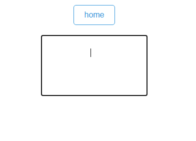

to add background color select and click this:
and select a color of your choice.
to use line break click this:

not home button(that is not a button its a link),
then click line break button
to add
backgound
color
select a text you want.
then click mark,click cancel.
to change the color
select a color then click mark,click cancel